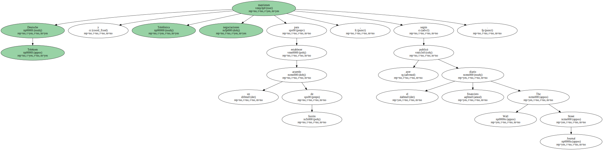
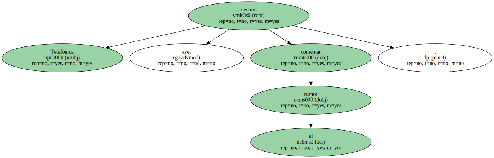
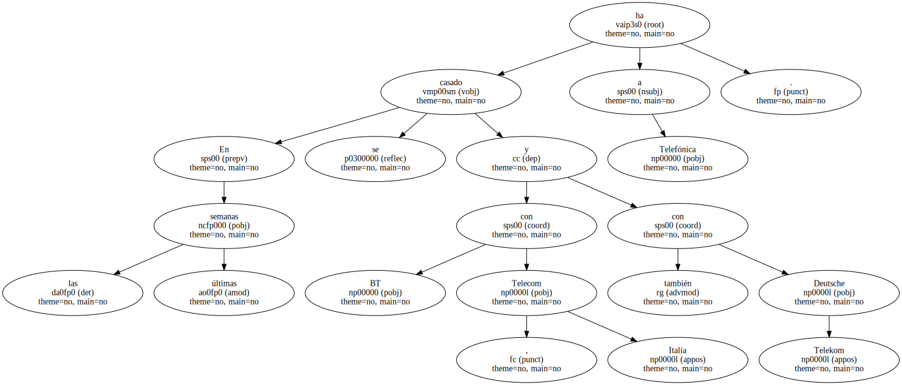
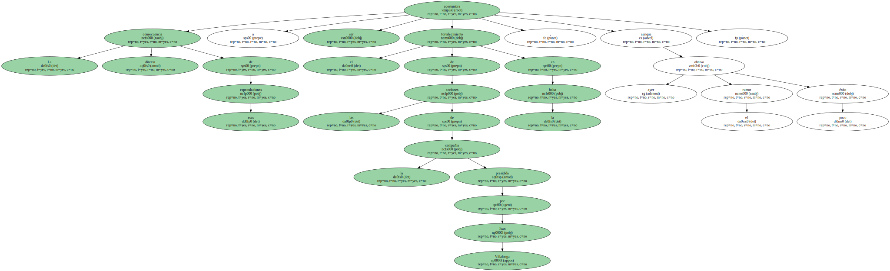
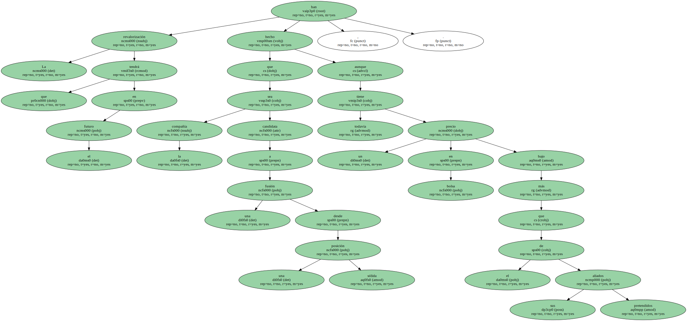
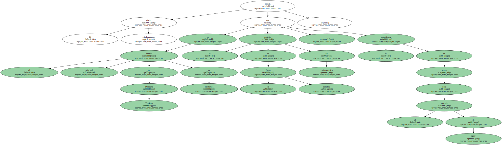

Deutsche Telekom y Telefónica mantienen negociaciones para establecer un acuerdo de fusión , según publicó ayer el diario financiero The Wall Street Journal.
Según el periódico , en las últimas semanas ambas corporaciones han mantenido conversaciones para alcanzar una fusión.

" Aunque cualquier tipo de acuerdo entre las dos está todavía muy lejos y es improbable que ocurra antes de las próximas elecciones generales en España , las conversaciones resaltan el frenético ritmo que hay en este sector en Europa en este sentido " , dice el diario.

Telefónica declinó ayer comentar el rumor.
En las últimas semanas se ha casado a Telefónica con BT , Telecom Italia y también con Deutsche Telekom.
La consecuencia directa de esas especulaciones acostumbra a ser el fortalecimiento de las acciones de la compañía presidida por Juan Villalonga en la bolsa , aunque ayer el rumor obtuvo poco éxito.
La revalorización que tendrá en el futuro han hecho que la compañía sea candidata a una fusión desde una posición sólida , aunque todavía tiene un precio en bolsa más bajo que el de sus pretendidos aliados.
El diario estadounidense resalta que el principal interés de Deutsche Telekom por Telefónica es la posición de la firma española en Latinoamérica y la coincidencia de planes para el mercado de EEUU.
